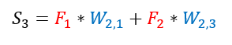
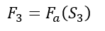
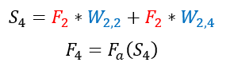

Вычислим значение функций активации нейронов второго скрытого слоя.
Для нейрона F3 посчитаем сумму произведений весов на значение входов:

Для нейрона F3 посчитаем значение функции активации:

Аналогичным методом посчитаем значение функции активации для нейрона F4:
